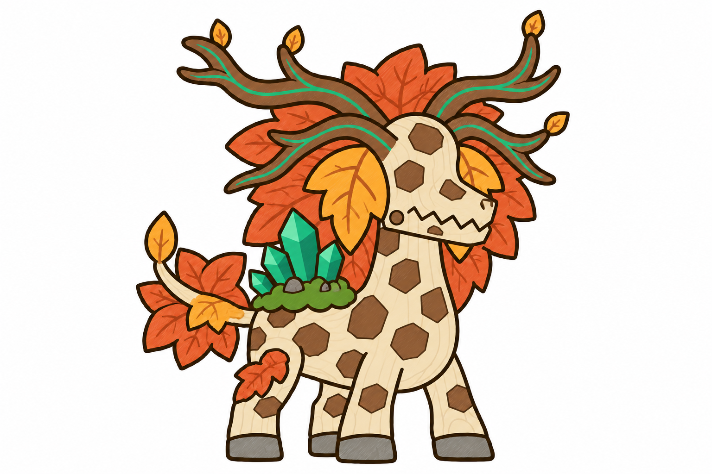
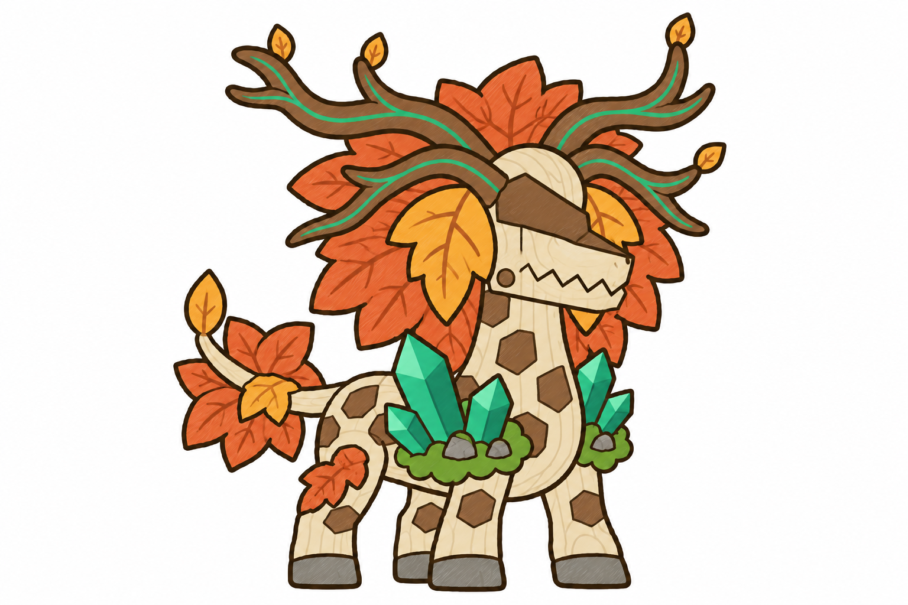
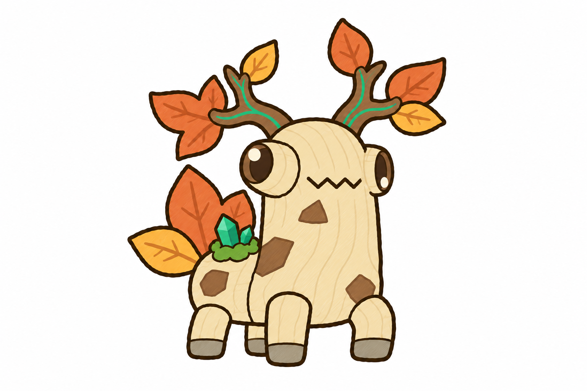

Tướng thứ 4 đảo Mộc: hươu gỗ, hai dạng
DẠNG 2 · bản mới: bỏ tấm nâu trên đầu (đầu đốm nâu như thân), rêu + pha lê đưa lên lưng

DẠNG 2 · bản trước (tấm vỏ nâu trên trán, pha lê ở vai)

DẠNG 1 · đã chốt (mắt lác cách 2)
